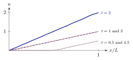
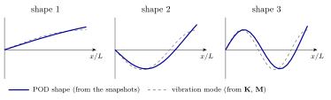
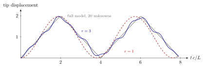
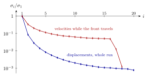

Lecture D
Model Reduction with POD
This lecture builds on Lecture 5 (modes, time stepping) and uses the least squares of Lecture A. It answers the question on which Exercises 5 and 6 ended.
D.1 A table of solutions, and a suspicion
A simulation does not produce one answer; it produces a table. The explicit time stepper of Lecture 5, run on a bar of 20 elements after a sudden end load, delivers the displacement of 20 nodes at 178 instants: a matrix of \(20\times178 = 3560\) numbers, one column per instant. Such a matrix of computed states is called a snapshot matrix, \[\mathbf{S} = \begin{bmatrix} \mathbf{u}^{(1)} & \mathbf{u}^{(2)} & \cdots & \mathbf{u}^{(n)} \end{bmatrix}.\] The columns may belong to instants of time, as here, or to load levels, or to values of a design parameter — any family of solutions of one model.
Now look at the columns (Fig. D.1). They are not 178 unrelated shapes. They resemble one another; later ones nearly repeat earlier ones. The suspicion is hard to avoid: this table holds far fewer than 3560 numbers’ worth of information. If a handful of shapes, mixed in different amounts, described every column, we could store the table cheaply — and, more ambitiously, compute with the handful instead of the 20.

Remark
What the small examples are for. Everything in this lecture is toy-sized on purpose: three springs, a bar of 20 elements. At this size you can compute each step by hand or in a few lines, and see what the method does and how it is built. You cannot see a need for it: a model with 20 unknowns is solved faster than it is reduced, and the classical methods of the earlier lectures do the same job exactly. Model reduction earns its keep on large models that must be solved many times; that argument is made in the literature named at the end. Here we want the structure.
D.2 One shape: a matrix of rank one
Start where the suspicion is plainly true. Take a chain of three unit springs, fixed at the left (Lecture 1), and pull at its free end with a force \(F\). The three nodes move by \(\mathbf{u} = F\,[\,1\ \ 2\ \ 3\,]^{\mathsf{T}}\): each spring stretches by \(F\), and the stretches add up along the chain. Solve for three load levels, \(F = 1, 2, 3\), and collect the solutions as columns: \[\mathbf{S} = \begin{bmatrix} 1 & 2 & 3\\ 2 & 4 & 6\\ 3 & 6 & 9\end{bmatrix} = \begin{bmatrix}1\\2\\3\end{bmatrix}\begin{bmatrix}1 & 2 & 3\end{bmatrix} .\] Nine numbers, but only one shape, \([1\ 2\ 3]^{\mathsf{T}}\), taken in three amounts, \(1, 2, 3\). Six numbers say it all — and for a model with a million nodes and a thousand load levels the same bookkeeping would replace \(10^9\) numbers by a million and a thousand. A matrix that is one column times one row is said to have rank one.
It is convenient to give the shape length one. Since \(\sqrt{1^2+2^2+3^2} = \sqrt{14}\), \[\mathbf{S} = \sigma\,\boldsymbol{\phi}\,\mathbf{v}^{\mathsf{T}}, \qquad \boldsymbol{\phi }= \tfrac{1}{\sqrt{14}}\begin{bmatrix}1\\2\\3\end{bmatrix},\quad \mathbf{v} = \tfrac{1}{\sqrt{14}}\begin{bmatrix}1\\2\\3\end{bmatrix},\quad \sigma = 14 .\] A unit shape \(\boldsymbol{\phi}\) along the structure, a unit pattern \(\mathbf{v}\) across the snapshots, and one number \(\sigma\) that carries all the size. Remember the three roles; nothing more will be added, only repeated.
D.3 Almost one shape: the decomposition by hand
Real tables are never exactly rank one. Take the same chain with two different loads: a unit force at the end, and a unit force at the middle node. The second gives \(\mathbf{u} = [\,1\ \ 2\ \ 2\,]^{\mathsf{T}}\) (the last spring carries nothing and rides along). So \[\mathbf{S} = \begin{bmatrix} 1 & 1\\ 2 & 2\\ 3 & 2\end{bmatrix}.\] Two columns, not multiples of each other — but close. Which single shape describes both best, and how much is lost?
“Best” needs a measure, and we take the one of Lecture A: least squares. Find the unit shape \(\boldsymbol{\phi}\) and amounts \(a_1, a_2\) such that the sum of squares of all entries of \(\mathbf{S} - \boldsymbol{\phi}\,[a_1\ a_2]\) is as small as possible. The result of that minimization is a small eigenvalue problem, the same animal as in Section 5.5: \[\bigl(\mathbf{S}^{\mathsf{T}}\mathbf{S}\bigr)\,\mathbf{v} = \sigma^2\,\mathbf{v} . \tag{D.1}\] The matrix \(\mathbf{S}^{\mathsf{T}}\mathbf{S}\) contains the dot products of the snapshots with one another — it measures how alike they are.
By hand.
\[\mathbf{S}^{\mathsf{T}}\mathbf{S} = \begin{bmatrix} 14 & 11\\ 11 & 9\end{bmatrix}, \qquad \det\begin{bmatrix} 14-\sigma^2 & 11\\ 11 & 9-\sigma^2\end{bmatrix} = \sigma^4 - 23\,\sigma^2 + 5 = 0\] \[\Longrightarrow\quad \sigma_1^2 = 22.78,\quad \sigma_2^2 = 0.22, \qquad \sigma_1 = 4.77,\quad \sigma_2 = 0.47 .\] For \(\sigma_1\) the first row of (D.1) gives \(\mathbf{v}_1 = [\,0.781\ \ 0.624\,]^{\mathsf{T}}\), and the shape follows by applying \(\mathbf{S}\) and dividing by \(\sigma_1\): \[\boldsymbol{\phi}_1 = \frac{\mathbf{S}\,\mathbf{v}_1}{\sigma_1} = \begin{bmatrix} 0.294\\ 0.589\\ 0.753\end{bmatrix}, \qquad \sigma_1\boldsymbol{\phi}_1\mathbf{v}_1^{\mathsf{T}}= \begin{bmatrix} 1.10 & 0.88\\ 2.20 & 1.75\\ 2.81 & 2.24\end{bmatrix} \ \text{ against }\ \begin{bmatrix} 1 & 1\\ 2 & 2\\ 3 & 2\end{bmatrix}.\] One shape — a compromise between \([1\ 2\ 3]\) and \([1\ 2\ 2]\) — reproduces both columns to within about ten percent. The second pair (\(\sigma_2\), \(\boldsymbol{\phi}_2\), \(\mathbf{v}_2\)) repairs the rest exactly.
Two checks, as always. The sum \(\sigma_1^2 + \sigma_2^2 = 23\) equals the sum of the squares of all six entries of \(\mathbf{S}\) (\(1+4+9+1+4+4\)): the \(\sigma_i^2\) share out the total content of the table. And the share of the first shape is \(22.78/23 = 99.0\,\%\).
Key idea
Every snapshot matrix is a sum of rank-one pieces, sorted by importance: \[\mathbf{S} = \sigma_1\,\boldsymbol{\phi}_1\mathbf{v}_1^{\mathsf{T}}+ \sigma_2\,\boldsymbol{\phi}_2\mathbf{v}_2^{\mathsf{T}}+ \dots \qquad \sigma_1 \ge \sigma_2 \ge \dots \ge 0 .\] The shapes \(\boldsymbol{\phi}_i\) are perpendicular to one another and of unit length; so are the patterns \(\mathbf{v}_i\). Stopping after \(r\) terms gives the best approximation of \(\mathbf{S}\) by \(r\) shapes in the least-squares sense, and what is lost is exactly \(\sigma_{r+1}^2 + \sigma_{r+2}^2 + \dots\) This is the singular value decomposition (SVD), \(\mathbf{S} = \boldsymbol{\Phi}\,\boldsymbol{\Sigma}\,\mathbf{V}^{\mathsf{T}}\); the \(\sigma_i\) are the singular values. Applied to snapshots it is called proper orthogonal decomposition (POD), and the \(\boldsymbol{\phi}_i\) are the POD shapes.
For anything larger than our \(3\times2\) table nobody solves (D.1) by hand; the SVD is a library routine (numpy.linalg.svd). What remains for the user is one decision: where to stop. The usual rule keeps the smallest \(r\) for which \[\frac{\sigma_1^2 + \dots + \sigma_r^2}{\sigma_1^2 + \sigma_2^2 + \dots} \;\ge\; 1 - \epsilon ,
\tag{D.2}\] with, say, \(\epsilon = 10^{-2}\) or \(10^{-3}\). The left side is commonly called the “energy” captured by \(r\) shapes. It is a sum of squares, not joules — a name, not a physical energy.
D.4 POD shapes and vibration modes
Back to the bar of Fig. D.1. The SVD of its \(20\times178\) snapshot matrix gives \[\sigma_1,\dots,\sigma_4 = 43.4,\ \ 3.68,\ \ 1.22,\ \ 0.60, \qquad\text{shares: } 99.2\,\%,\ 0.7\,\%,\ 0.08\,\%,\ 0.02\,\% .\] The suspicion was right: one shape carries almost everything, three carry \(99.97\,\%\).
But we have decomposed this bar’s motion into shapes before. In Section 5.5 the shapes were the vibration modes, and Exercise 5 expanded this very response in them. Fig. D.2 puts the two families side by side.

They are clearly related, and clearly not the same. Three observations explain both.
The first POD shape is nearly a straight line. A suddenly loaded bar swings about its static deflection, and the static deflection under an end force is the straight line \(u = Fx/EA\). Most of every snapshot is that line; POD puts it first. (The angle between \(\boldsymbol{\phi}_1\) and the straight line is about \(2^\circ\).) The first vibration mode is a quarter sine wave instead — it knows nothing of this load.
Without a load, POD finds the modes. Release the two-mass chain of Section 5.5 from some initial displacement and record a long stretch of its free vibration. Its motion is \(q_1(t)\,\boldsymbol{\phi}^{(1)} + q_2(t)\,\boldsymbol{\phi}^{(2)}\) with two cosines of different frequency. In \(\mathbf{S}^{\mathsf{T}}\mathbf{S}\) — or rather its sibling \(\mathbf{S}\mathbf{S}^{\mathsf{T}}\), which has the POD shapes as eigenvectors — the products \(q_1 q_2\) of two different cosines average out over time, and what remains is “mode 1 times mode 1 plus mode 2 times mode 2”. If the masses are equal, the modes are perpendicular in the ordinary sense, and that sum is the decomposition of the key-idea box. Indeed: the SVD of such a record returns \([\,0.526\ \ 0.851\,]^{\mathsf{T}}\), which is the mode \([\,0.618\ \ 1\,]^{\mathsf{T}}\) of Lecture 5 scaled to unit length.
The two families are sorted differently. Modes are sorted by frequency: a property of the structure. POD shapes are sorted by how much of these snapshots they carry: a property of the data.
| relative error of the response with \(r\) shapes | \(r=1\) | 2 | 3 | 6 |
|---|---|---|---|---|
| first \(r\) vibration modes (Exercise 5) | \(12.5\,\%\) | \(5.3\,\%\) | \(3.1\,\%\) | \(1.3\,\%\) |
| first \(r\) POD shapes | \(\phantom{0}9.1\,\%\) | \(3.4\,\%\) | \(1.8\,\%\) | \(0.7\,\%\) |
POD wins every column, and must: by the key idea no \(r\) shapes can do better on these snapshots. That is also the catch. Modes come from the model and serve every load; POD shapes come from the data and are tailored to the load that produced them.
D.5 First use: Galerkin projection
So far we have only compressed a table that already existed. The more interesting step: use the shapes to compute new solutions cheaply.
Recall the single most important move of Lecture 2 (Section 2.5): do not search among all functions; choose a family described by a few numbers and search there. We do exactly that, one level up. The unknown is no longer a function but a vector of nodal displacements, and the family is \[\mathbf{u} \;\approx\; a_1\,\boldsymbol{\phi}_1 + \dots + a_r\,\boldsymbol{\phi}_r = \boldsymbol{\Phi}\,\mathbf{a} , \tag{D.3}\] with the POD shapes as columns of \(\boldsymbol{\Phi}\) and only \(r\) unknown amounts \(\mathbf{a}\). Insert this into \(\mathbf{K}\mathbf{u} = \mathbf{f}\): we get \(n\) equations for \(r\) unknowns, too many. Galerkin’s answer (Section 2.8) was to weigh the residual with the ansatz functions themselves; here that means multiplying from the left by \(\boldsymbol{\Phi}^{\mathsf{T}}\): \[\underbrace{\boldsymbol{\Phi}^{\mathsf{T}}\mathbf{K}\,\boldsymbol{\Phi}}_{\textstyle\mathbf{K}_r\ (r\times r)}\,\mathbf{a} \;=\; \underbrace{\boldsymbol{\Phi}^{\mathsf{T}}\mathbf{f}}_{\textstyle\mathbf{f}_r} , \tag{D.4}\] and in dynamics, in the same way, \(\mathbf{M}_r\,\ddot{\mathbf{a}} + \mathbf{K}_r\,\mathbf{a} = \mathbf{f}_r(t)\) with \(\mathbf{M}_r = \boldsymbol{\Phi}^{\mathsf{T}}\mathbf{M}\,\boldsymbol{\Phi}\). Compare with (2.12): there \(K_{ij} = \int EA\,\varphi_i'\varphi_j'\,\mathrm{d}x\) for functions we had picked, such as \(x(L-x)\); here \((\mathbf{K}_r)_{ij} = \boldsymbol{\phi}_i^{\mathsf{T}}\mathbf{K}\,\boldsymbol{\phi}_j\) for shapes the data delivered. A reduced model is a Galerkin method whose shape functions were made by an SVD.
By hand.
The chain of three unit springs, \(\mathbf{K} = \left[\begin{smallmatrix}2&-1&0\\-1&2&-1\\0&-1&1\end{smallmatrix}\right]\), with the single shape of Section D.2, \(\boldsymbol{\phi }= [1\ 2\ 3]^{\mathsf{T}}\) (the length does not matter here). Then \(\mathbf{K}\boldsymbol{\phi }= [0\ 0\ 1]^{\mathsf{T}}\) and \(K_r = \boldsymbol{\phi}^{\mathsf{T}}\mathbf{K}\boldsymbol{\phi }= 3\): one equation, \(3a = \boldsymbol{\phi}^{\mathsf{T}}\mathbf{f}\).
End load \(\mathbf{f} = [0\ 0\ F]^{\mathsf{T}}\): \(3a = 3F\), so \(\mathbf{u} = F\,[1\ 2\ 3]^{\mathsf{T}}\) — exact. The truth lives in the family (the principle of Section 2.6), and Galerkin finds it.
A load the shape has never seen, one unit on every node, \(\mathbf{f} = [1\ 1\ 1]^{\mathsf{T}}\): \(3a = 6\), so \(\mathbf{u} = [2\ 4\ 6]^{\mathsf{T}}\). The exact solution is \([3\ 5\ 6]^{\mathsf{T}}\). The reduced model is too stiff in the interior — a single straight shape cannot bend — and answers without any sign of doubt.
On the bar.
Project the 20-element bar on its first \(r\) POD shapes and step (D.4) through time with the central difference of Section 5.7 (Fig. D.3).
| number of shapes \(r\) | 1 | 2 | 3 | 5 | 8 |
|---|---|---|---|---|---|
| error of the reduced model | \(21.6\,\%\) | \(11.2\,\%\) | \(5.3\,\%\) | \(2.3\,\%\) | \(1.2\,\%\) |
| largest stable time step \(2/\omega_{\max}\) | \(1.22\) | \(0.39\) | \(0.24\) | \(0.13\) | \(0.084\) |

Three things to read off.
The reduced model is worse than the table of Section D.4 promised (\(5.3\,\%\) against \(1.8\,\%\) for three shapes). No contradiction: there we projected a solution we already had; here the reduced model has to find its own way through time, and its errors accumulate. The projection error is a floor, not a forecast.
With one shape the bar becomes one mass on one spring, with \(\omega = \sqrt{K_r/M_r} = 1.646\). The true lowest frequency of this mesh is \(1.570\). The estimate is too high, and that is a rule: forcing a structure into a shape that is not its mode can only stiffen it. (Readers who know the Rayleigh quotient have just met it again.)
The stability limit moved. The full model must respect \(\Delta t \le 0.050\), dictated by its highest, least trustworthy mode (Section 5.7). The reduced models do not contain that mode; with three shapes, \(\Delta t = 0.2\) is stable, and the run of 177 steps becomes 40, on 3 unknowns instead of 20. Reduction removes unknowns and the stiffest part of the dynamics.
Remark
Modal analysis is the same construction. Put the vibration modes into \(\boldsymbol{\Phi}\) instead of the POD shapes, and \(\mathbf{K}_r\) and \(\mathbf{M}_r\) in (D.4) come out diagonal — that was the orthogonality of Section 5.5 — so the reduced equations fall apart into the independent oscillators of equation (5.7). Truncated modal analysis, the oldest reduced model in structural dynamics, is Galerkin projection on modes. POD replaces shapes derived from the model by shapes extracted from solutions; the projection is the same.
This route is called intrusive: to form \(\boldsymbol{\Phi}^{\mathsf{T}}\mathbf{K}\boldsymbol{\Phi}\) one must have \(\mathbf{K}\) — the model itself, opened up. In return the physics stays inside: the reduced model still balances forces, only in fewer directions.
D.6 Second use: regression on the coefficients
Often the model cannot be opened: the snapshots come from a commercial program, or from measurements. Then the second route remains. Suppose the snapshots belong to values \(\mu_1, \mu_2, \dots\) of a parameter — a stiffness, a load position, a thickness. Each snapshot has POD amounts \(\mathbf{a}(\mu_k) = \boldsymbol{\Phi}^{\mathsf{T}}\mathbf{u}^{(k)}\). Treat those as data and fit a function \(\mu \mapsto \mathbf{a}(\mu)\) through them, with the regression of Lecture A. A new solution is then two cheap steps: evaluate the fitted function, multiply by \(\boldsymbol{\Phi}\). No \(\mathbf{K}\) is ever assembled. The route is called non-intrusive.
By hand.
The three-spring chain once more, end load \(F=1\), but now the middle spring has stiffness \(\mu\) instead of 1 (a weakened member, say). Springs in series: the stretches are \(1\), \(1/\mu\), \(1\), and adding up, \[\mathbf{u}(\mu) = \begin{bmatrix}1\\ 1+1/\mu\\ 2+1/\mu\end{bmatrix} = \begin{bmatrix}1\\1\\2\end{bmatrix} + \frac{1}{\mu}\begin{bmatrix}0\\1\\1\end{bmatrix} .\] Every solution, for every \(\mu\), is a mixture of the same two shapes. Snapshots at \(\mu = \tfrac12, 1, 2\), namely \([1\ 3\ 4]\), \([1\ 2\ 3]\), \([1\ 1.5\ 2.5]\), therefore form a matrix of rank two: the third singular value is zero, and two POD shapes reproduce the whole family without error.
What is left to learn is how the amounts depend on \(\mu\) — and the formula above tells us: through \(1/\mu\). Now try two regressions on the three data points \((\mu, 1/\mu) = (\tfrac12, 2), (1, 1), (2, \tfrac12)\).
A straight line in \(\mu\), the obvious first choice. The normal equations (A.1) give \(2.25 - 0.929\,\mu\). At the unseen value \(\mu = 0.75\) it predicts \(1.55\) where the truth is \(1.33\); at \(\mu = 4\), outside the data, it predicts \(-1.46\) where the truth is \(+0.25\): a spring that gets longer when compressed.
A straight line in \(1/\mu\). Exact, for every \(\mu\), from two data points.
The same data, the same least squares; one family contains the truth, the other does not, and no amount of fitting moves it there. It is the lesson of Lecture A, and of Section 2.6 before it, in a new place. Knowing that flexibilities add — one line of mechanics — was worth more than more data.
On the bar.
A bar of 20 elements, fixed at the left, under a uniform distributed load, with a weakened zone \(0.4 < x/L < 0.6\) of stiffness \(\mu\,EA\). Five snapshots, \(\mu = 0.2, 0.4, \dots, 1\); two POD shapes (again the third singular value vanishes); tested at 41 values of \(\mu\) in the same range:
| reduced model with two POD shapes | needs | largest error |
|---|---|---|
| regression, amounts linear in \(\mu\) | snapshots only | \(12\,\%\) |
| regression, amounts quadratic in \(\mu\) | snapshots only | \(6\,\%\) |
| regression, amounts linear in \(1/\mu\) | snapshots only | round-off |
| Galerkin projection, equation (D.4) | snapshots and \(\mathbf{K}(\mu)\) | round-off |
Galerkin needs no advice about \(1/\mu\): it carries \(\mathbf{K}(\mu)\) along, and the mechanics does the rest. Regression needs no model at all, and is exactly as good as the family of functions we offer it. Which route is right depends on what one has — a model that can be opened, or only its answers.
D.7 Where it fails: things that move
All examples so far shared a hidden kindness: the solution changed its size, and a little of its form, but it stayed in place. Take a solution that travels instead.
By hand.
A short pulse runs along three nodes: first it sits on node 1, then on node 2, then on node 3. And a front that advances: first node 1 is reached, then 1 and 2, then all three. \[\mathbf{S}_{\text{pulse}} = \begin{bmatrix}1&0&0\\0&1&0\\0&0&1\end{bmatrix}, \qquad \mathbf{S}_{\text{front}} = \begin{bmatrix}1&1&1\\0&1&1\\0&0&1\end{bmatrix}.\] The pulse matrix has \(\sigma_1 = \sigma_2 = \sigma_3 = 1\): every shape is exactly as important as every other, each carries a third, and nothing whatever can be dropped. Yet to the eye this is the simplest motion there is — one shape, shifted. That is precisely the difficulty: POD can scale and add shapes, it cannot move them. The front does little better: \(\sigma_i^2 = 5.05,\ 0.64,\ 0.31\), so the first shape carries \(84\,\%\) — compare the \(99\,\%\) of Section D.3.
On the bar.
We have had a travelling front all along and did not notice. In the first moments after the sudden load, a wave front runs from the loaded end into the bar at speed \(c\) (Exercise 5). Behind the front the material moves with constant velocity; ahead of it nothing has happened. The displacement, which Fig. D.1 showed, is the gentle integral of that picture — a ramp. The velocity is the front itself: a step. Take the SVD of both tables (Fig. D.4).

| shapes needed for \(99.9\,\%\) in (D.2) | 20 elements | 50 | 100 |
|---|---|---|---|
| displacements, whole run | 3 | 3 | 3 |
| velocities while the front travels | 16 | 37 | 68 |
The first row is what model reduction hopes for: refine the mesh, and the number of shapes stays put, because it belongs to the solution and not to the mesh. The second row is the failure in one line: refine the mesh, the front gets sharper, and the number of shapes grows with it. For a moving front the reduced model is hardly smaller than the full one.
This limit is not a weakness of our example. It is shared by wave fronts, shocks, moving contact zones and cracks — by everything whose essential feature is where it is. Ways around it exist (shapes that are allowed to shift or deform, nonlinear combinations in place of sums) and are an active research field beyond this lecture; the references at the end are a starting point.
Bridge to 2D (optional)
For readers who know the triangles of Lecture 4 and the heated plate of Lecture C (Section C.8). Nothing in this lecture was tied to one dimension: a snapshot is a column of nodal values, whatever mesh they sit on. Solve the plate with an inclusion for 25 positions of the inclusion (linear triangles, \(20\times20\) squares) and stack the temperature fields as columns. The first POD shape carries \(99.96\,\%\) — and tells us almost nothing, because it is the temperature field of the plate without inclusion, common to all snapshots. Subtract that field first, and take the SVD of what the inclusion changes: now three shapes carry \(94\,\%\) and eight are needed for \(99\,\%\). The inclusion is a thing that moves. The optional last part of Exercise D lets you compute and draw these shapes.
D.8 What the toys showed
| vibration modes (Lecture 5) | POD shapes (this lecture) | |
|---|---|---|
| come from | the model: \(\mathbf{K}\), \(\mathbf{M}\) | solutions: the snapshot matrix |
| computed by | an eigenvalue problem | an SVD |
| sorted by | frequency | share of the snapshots |
| good for | any load on this structure | loads and parameters like those sampled |
| perpendicular in the sense of | \(\mathbf{M}\) and \(\mathbf{K}\) | the ordinary dot product |
| Galerkin projection | regression on the amounts | |
|---|---|---|
| needs | the snapshots and the model | the snapshots only |
| unknown amounts from | reduced equations \(\mathbf{K}_r\mathbf{a} = \mathbf{f}_r\) | a fitted function \(\mu\mapsto\mathbf{a}\) |
| the physics is | kept, in fewer directions | only in the data |
| as good as | the shapes | the shapes and the fitted family |
A last honest look at the examples. They were chosen to make the structure of the method visible and every number checkable: a table of solutions; a few shapes extracted from it by least squares; two ways to find the amounts for a new case; and one clear case in which the idea does not work. They were not chosen to show a gain. For three springs, or twenty elements, the full model is solved in less time than its SVD takes, and exactly. Whether a reduced model pays depends on how large the full model is, how often it must be solved, and how far the new cases lie from the sampled ones — questions of practice, treated in the literature below.
Further reading.
The best-approximation property of the SVD is due to Eckart & Young (1936). Holmes, Lumley & Berkooz (1996) is the classical book on POD, written for fluid flows. For reduced models of parametrized problems see the survey by Benner, Gugercin & Willcox (2015) and the book by Hesthaven, Rozza & Stamm (2016); for the limits of linear reduction on transport problems, Ohlberger & Rave (2016).
Companion exercise: Exercise D
Notebook Exercise_D_Model_Reduction.ipynb: you write a POD routine and check it against the hand examples of this lecture; decompose the snapshot matrix of your own time stepper and compare POD shapes with vibration modes; build a Galerkin reduced model and step it through time; build a regression model for the weakened bar and watch the choice of family decide its quality; and count the shapes a travelling front needs as the mesh is refined. An optional last part repeats the decomposition for the heated plate with an inclusion.
Looking ahead
One table of solutions deserves a second look. Load the three-spring chain with a unit force on node 1, then on node 2, then on node 3, and write the three solutions as columns: \([1\ 1\ 1]\), \([1\ 2\ 2]\), \([1\ 2\ 3]\). This snapshot matrix is nothing other than \(\mathbf{K}^{-1}\) — and since every load is a sum of unit loads, it contains the answer to all of them. Its columns have a classical name, influence lines; and the question how few shapes describe them leads from model reduction to a newer subject: networks that learn the map from loads to solutions as a whole. That is the starting point of a planned lecture on learning operators.